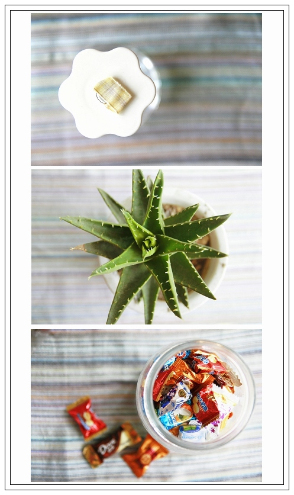
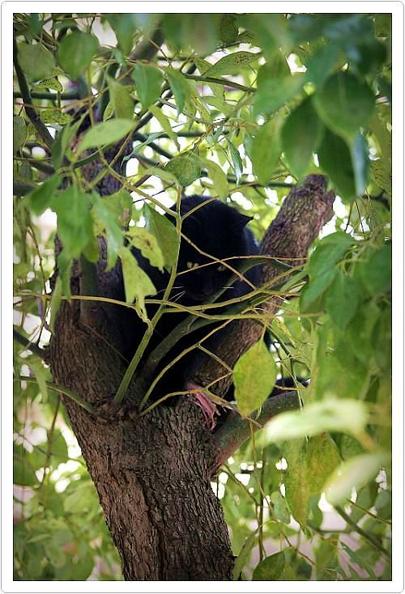

两个人的相机日志：2月6日 @ Feb 06, 2009
薇安：我喜欢对称，也喜欢斜角构图，别取笑我的呆板。暖棚的草莓，突然让人那么怀念夏天。亲爱的，其实我想让你猜那一朵梅花我拍的是什么？
Christina：这个天就吃草莓，真奢侈。
我就不喜欢对称的结构 ， 那朵梅花是杯盖吗？
， 那朵梅花是杯盖吗？


Christina：图一、中午在家门口遇到这只野猫，冬天来临之前在地下室给它弄个窝，还有猫粮和水，窗户留了供它进出的空隙。小黑一点不怕人，白天会在保安的小房子里烤火取暖，好肥的黑猫。唤它几声就会跟着你走，我就是这样把它引到地下室去的。luke见了它没命地追，可狗永远追不上猫，因为猫会上树；)树下坐着守侯的呆luke~
图二、在KFC解决的午饭，外面这位大姐来回走了两趟，令人眼前一亮。
薇安：你猜出来猫在思考什么了吗？每个生命都有属于自己的快乐和自在，我们谁也别羡慕。


11 Responses to “两个人的相机日志：2月6日”
2009-02-06
好像是只纯色的小黑
糖果和草莓，我猜
薇安应该是很精致，很理想主义的人
2009-02-06
很生活，有空我也来写。
2009-02-07
糖果和草莓还要猜吗？
要你猜第一张图那个白色梅花状的东西~
2009-02-07
排版问题，我猜其实是第三行的起首
我觉得那个白色梅花状的东西是水杯的杯盖，上面是可以拎的带子
2009-02-07
会玩耍的猫，不懂世人为什么如此忙碌
2009-02-07
梅花是个纽扣?
2009-02-07
都还没对哦，继续加油
2009-02-07
是不是防止切菜时切到手的咚咚阿
2009-02-07
女人的粉扑？
婴儿的安抚奶嘴？
哈哈~~~~
2009-02-08
还没接近答案。。。。。要不要给个提醒啊？
2009-02-08
是不是个简单的戒指或用做发卡的装饰物？
Leave A Reply
存档只读，评论已关闭。